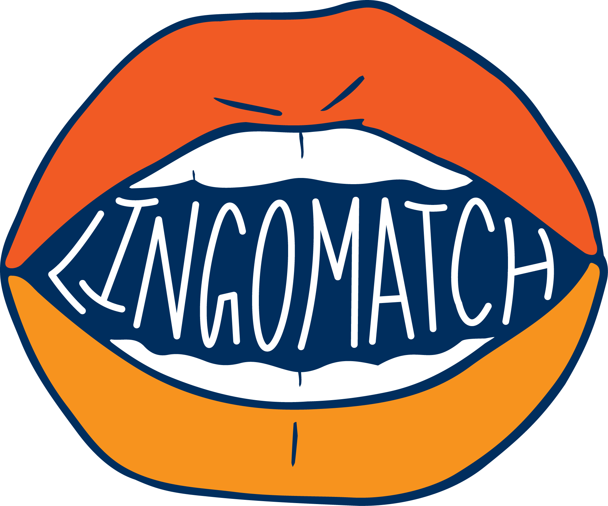

Being a first generation college student and daughter of immigrant parents, I am passionate about equal access in education, immigration rights, and giving back to the community. Below, are the student organizations I choose to be involved in on campus because they allow me to actively support the causes I care about and help those around me.
LingoMatch is a organization that connects bilingual and multibilingual University of Michigan students with local refugees or immigrants that are in need of translation and interpretation services. Students also volunteer weekly at the Bryant Community Center to help with their food distribution program. Being the marketing lead, I manage the organization's website, social media accounts, and design the neccessary marketing materials.
Girls in Electrical Engineering and Computer Science(GEECS) is a student organization that encourages the development of women in STEM by providing and encouraging professional and academic opportunities. As a member of the outreach committee, I work with the board to write curriculum and lesson plans for different educational workshops the group holds througout the year. Last year I volunteered to teach elemntary school girls SCratch and basic programming concepts.
Alternative Spring Break provides a community service learning opportunity to college students during their spring break. Each trip is centered around a different issue. Some of the trips last year were about education in urban areas, helping victims of domestic violence, supporting animal welfare and promotion of environmental justice. Last year I was part of the group that worked to engage with urban youths in Chicago. We volunteered at an organization called, Asian Youth Services, which focuses on providing after school programs and educational opportunities for disadvantaged youths in the area.